Liyan Zhao is currently an MFA candidate at the Yale School of Art.
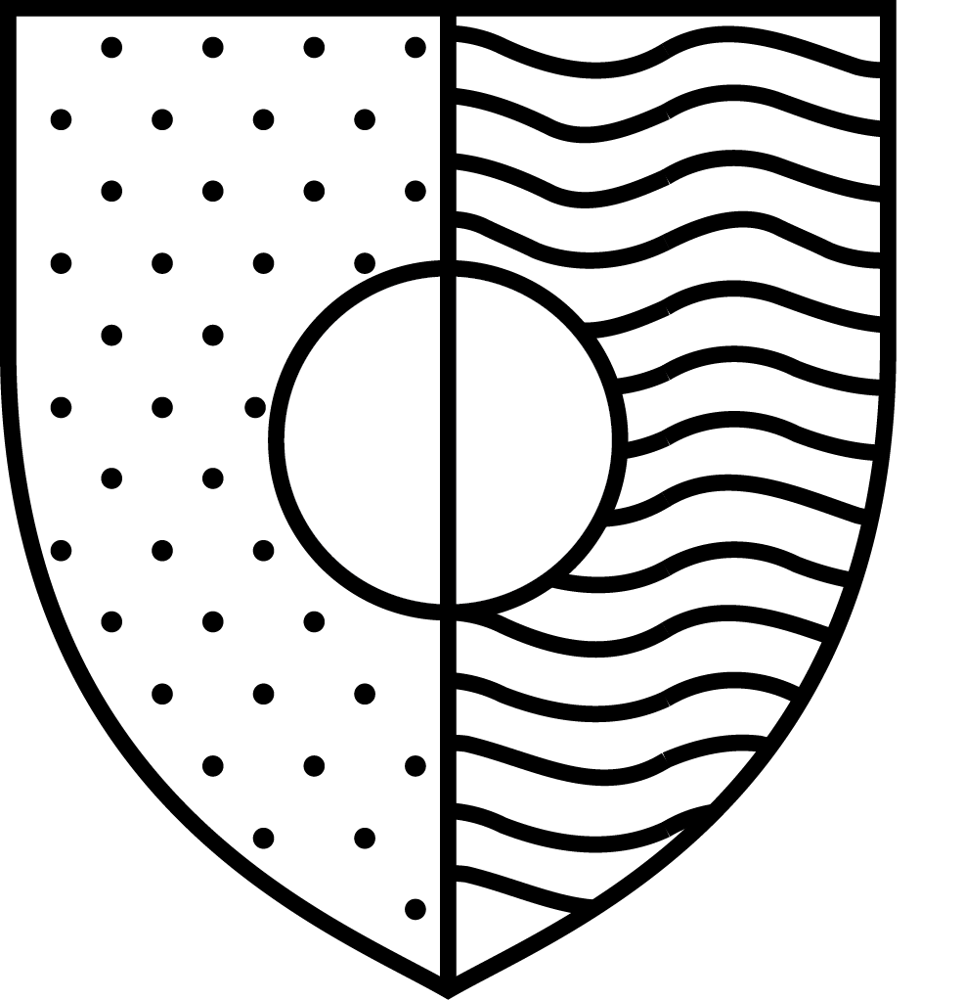
Unreading Language — Custom CSS typeface that translates legible text into pure ornamental pattern.
AI Conversations — Interactive site weaving together the history of chatbots through a narrative choose-your-own-adventure style navigation system.
Read This Word — Web translations of Vito Acconci's poem exploring different ways of reading and seeing.
Alcatraz — Visualization of a Sharon Olds poem using found home footage to paint an intimate psychological portrait of an anxious mind.
Divided Nation — Video meditation on the state of the nation post election.
Global Weaver — Speculative app that generates cross-national symbols of identity using existing national flags as starting points for deconstruction and reconstruction. This project seeks to undermine the notion of singular nationalism in a globalized world, offering instead a flexible system that generates custom, nuanced symbols capable of capturing the rich, complex interrelationships that inform the identities of global citizens.
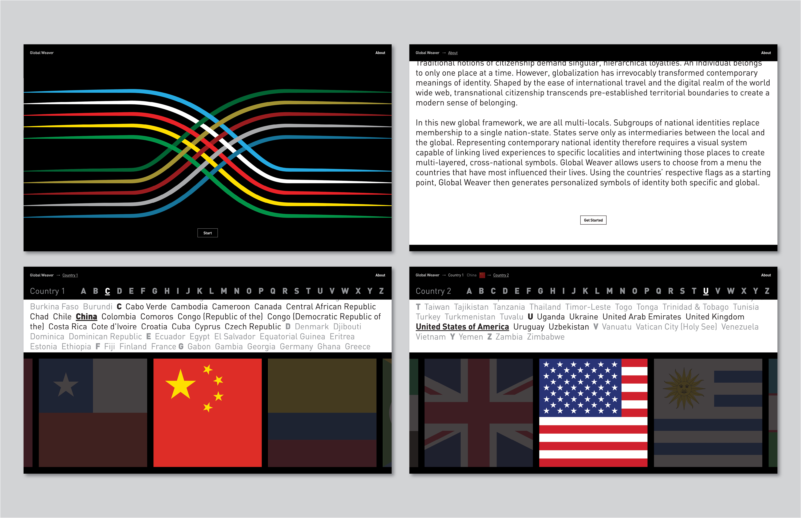
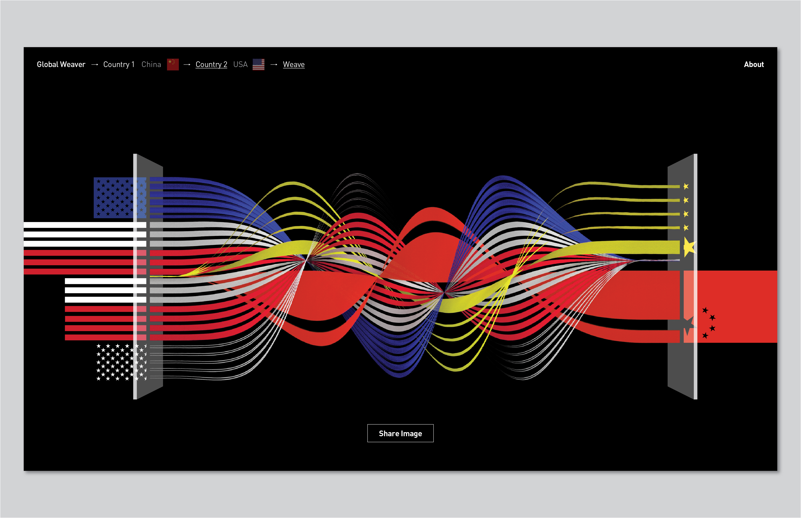
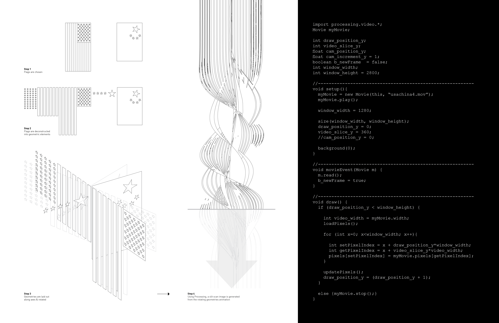
Deconstructed History — Graphic series critiquing the problematic history of immigration in America through the subversion of type. The first part of the series consisting of a typographic breakdown over time of the Chinese Exclusion Act of 1882. Individual strokes forming the letters come unglued and fall with time.


The second part of the series deconstructs the Anti-Coolie Act of 1826. Letters are deformed at three different temperatures are pieced together to subvert the xenophobic semantics of the original document.
 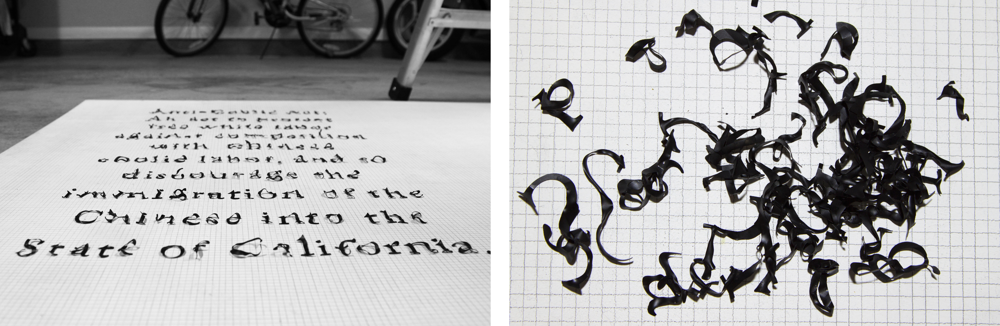
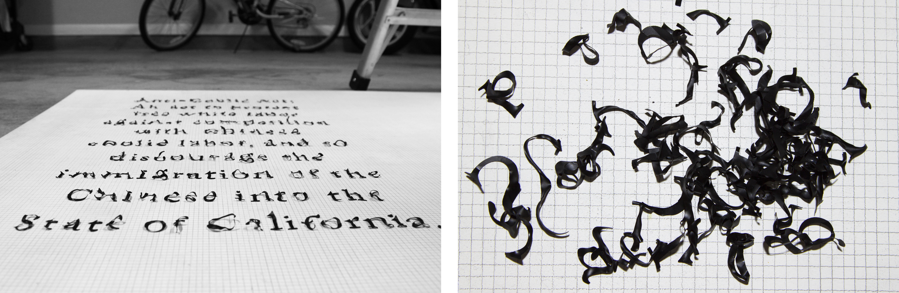
Monogram — Speculative system for translating Chinese characters into 3D sculptural forms, creating the possibility of custom monogram furnishings for a self-obsessed generation. Inspired by a recent trip to China where I saw selfie culture pushed to surreal, comical extremes, I propose an alternate reality where people fill their homes with self-branded furnishings – modern living for the ultimate narcissist.
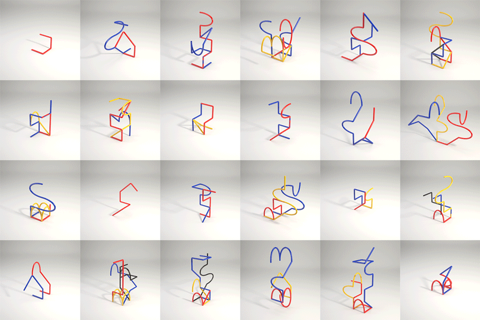


Color Walk — Speculative app allowing digital flaneurs to map and share color walks through urban spaces. Inspired by William Burroughs' exercise of exploring urban streets by following a single color, users navigate specific sites using Google Street View, noting each colored object that shapes their trajectory. Each of these walks, paired with a grid of Google image results for each object, can then be read back as a unique narrative of place.
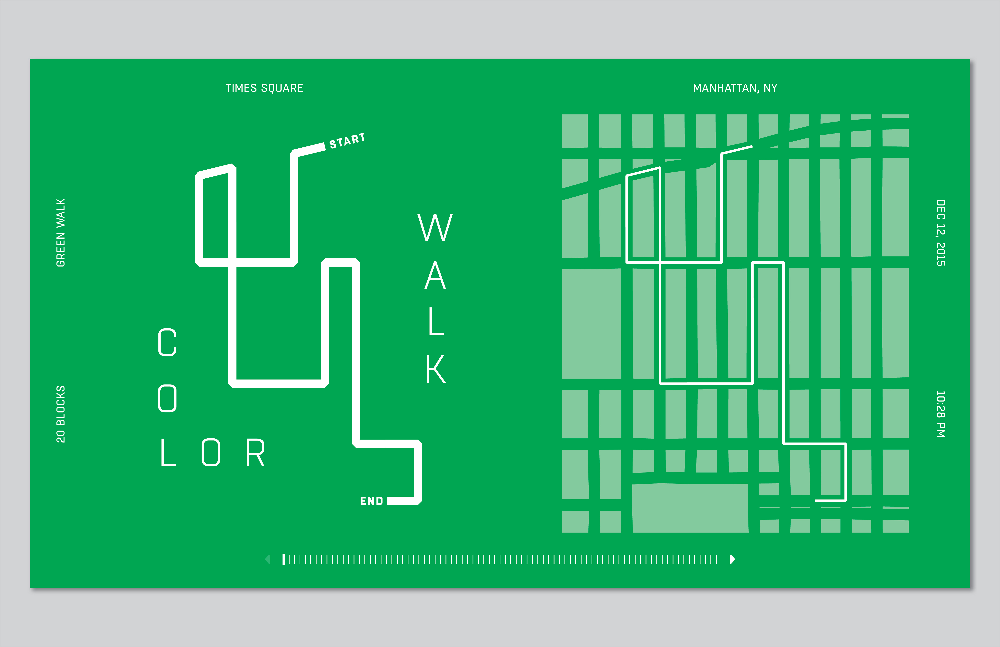
 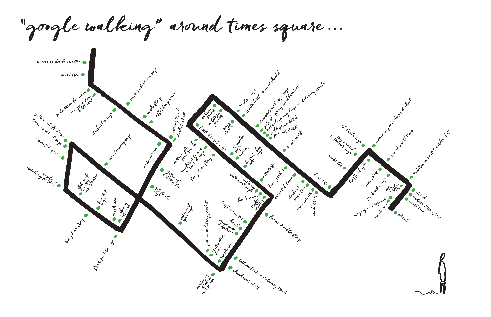
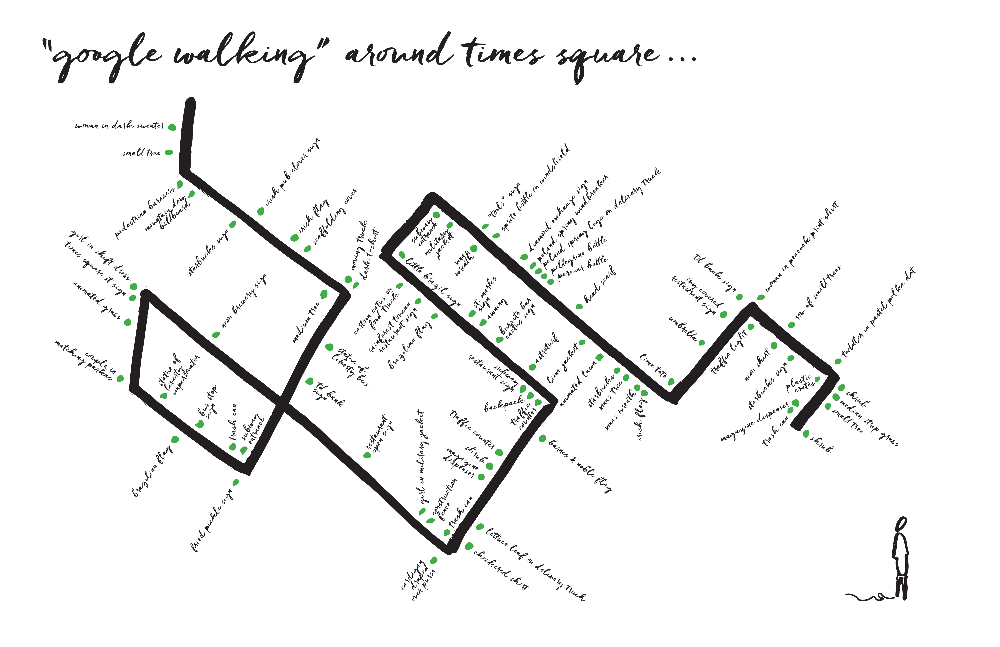
Make It Rain — Poster series questioning the dangers of weather modification technology. A tension between the printed posters and physical interventions that disrupt and obscure the message of an imagined weather modification corporation mirrors man’s sisyphean efforts to control the skies.
 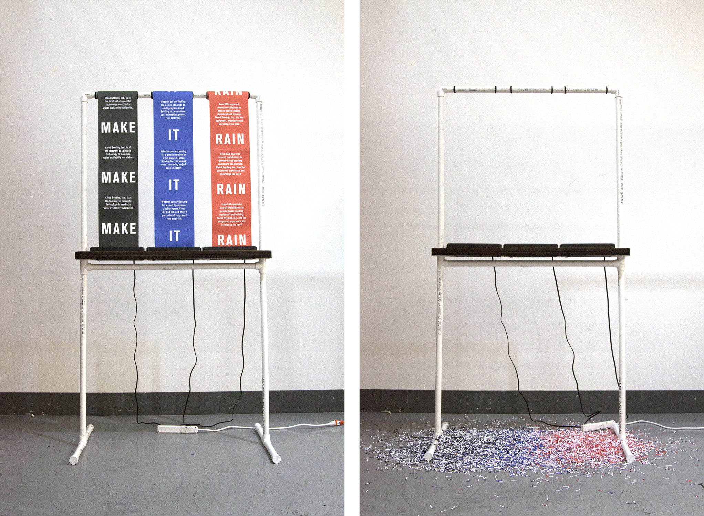
Family Trip — Diagram mapping the series of misfortunes that occured during a summer family trip to China.
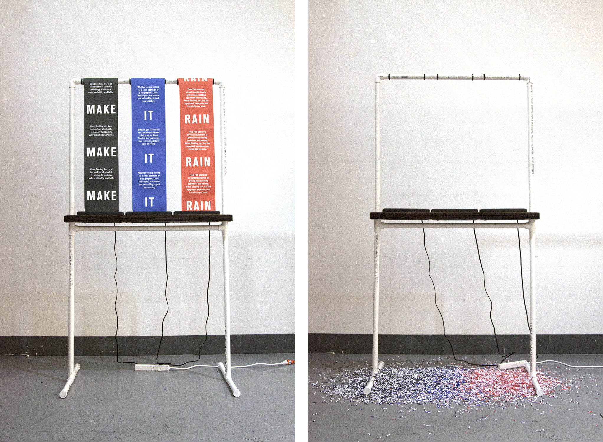
Family Trip — Diagram mapping the series of misfortunes that occured during a summer family trip to China.

Family Tree — Personal project mapping family relations as a way to reconnect with my lineage, language, and culture.


Fringe — An installation for Figment Art Festival on Governors Island consisting of a network of 5 hanging silos of various diameters, each providing shade and a semi-private space to linger in. The silo surface is woven using macrame techniques, creating a textured facade that is dense in some areas and open in others. These openings visually connect the silo interiors to the outside environment and the silos to each other. The bottom section of the silos is a ring of flowing rope fringe that participants brush through to enter the space. Within the silo interior, participants find an additional ring of hanging fringe that they can touch and interact with as they spend time in the space. The silos create an open framework that allows for and fosters unexpected social interactions. They vary in size, creating possibilities for both intimate, private moments as well as communal experiences.
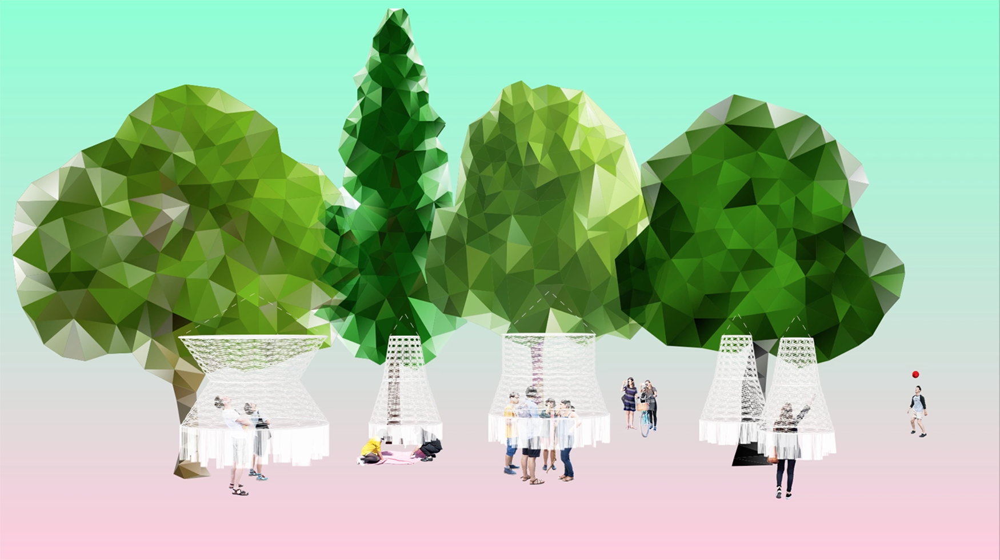
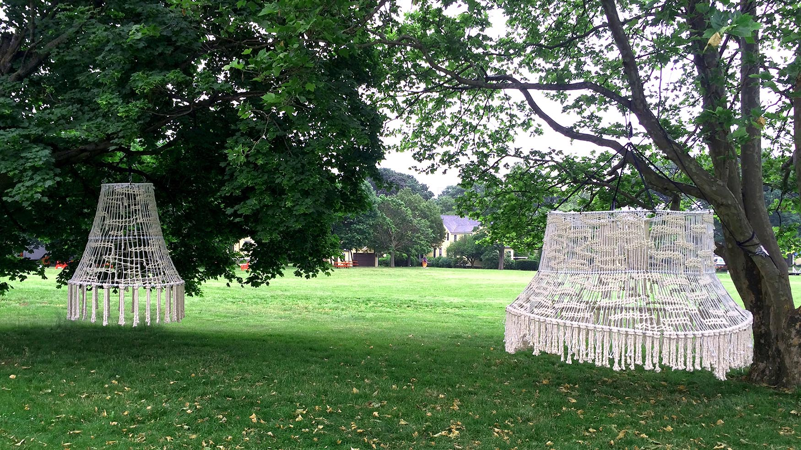
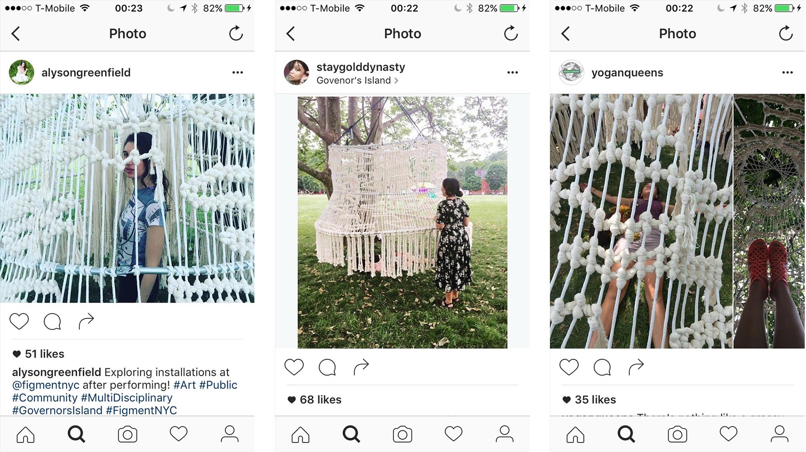
Learning from Katherine McCoy — Publication on the life and work of designer Katherine McCoy. The book is bisected, structured as a conversation between design educator and student.